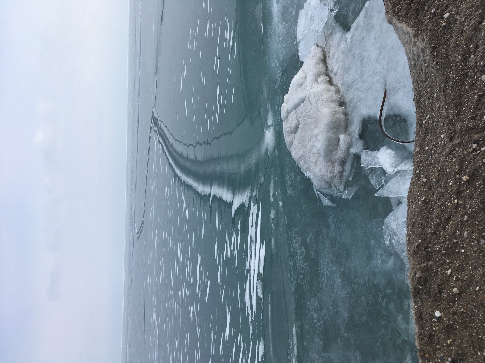

This is a repository for random thoughts and jokes.
Chicago winter

The UFO landing strip
Words that should exist
Wrength: the degree to which something is wrong (as in "strong" and "strength")
Atmospherics: a single word to replace the clunky "atmospheric science." Words like "asymptotics", "numerics", "physics", and "statistics" are already accepted, and it's time to give the atmosphere its due.
Awkerly: the opposite of awkward. This is a straightforward consequence of the convention that "eastward" and "easterly" mean "towards the east" and "from the east", respectively.
Utmosphere: the set of all extremes. The atmosphere, a.k.a. the sky, is "the limit" --- what a quantity can be "at most". Similarly the utmosphere is the set of all "utmost" quantities, which can only be accessed via (utmost) importance sampling. This is the topic of my research.
Pithy observations
Ever since humanity started using calendars, our days have been numbered.
The mechanical hound in Fahrenheit 451 should be called the "dogmatic."
Do we sneeze to expel microbes, or do the microbes make us sneeze so they can infect nearby people? If it's the latter, I wonder if humans can be considered microbes for the Earth, and space exploration is the Earth sneezing us out.
Bruce Springsteen songs ending in "land" tend to be masterpieces: "The Promised Land", "Jungleland", and "This Hard Land" are among my favorites.
The Harvard Bridge should be renamed the Shortfellow Bridge, because (1) it is nowhere near Harvard, (2) its length is measured in units of a short fellow named Smoot, and (3) it is the next bridge to the west of the Longfellow bridge. Seems like a no-brainer to me.
Jokes
All the wheat in America is genetically identical, because it's all inbred.
Actors tell each other "break a leg" for good luck. Musicians say "harm a knee".
The Hebrews ate horseradish at the first Passover seder in order to clear out their Sinai.
The mathematician Charles Hermite was extraordinarily tough. He once did surgery on his own knee, earning the name "self-joint operator."
Definition: An algorithm is called "recursive" if it induces the user to swear repeatedly at their computer.
The larger the sample size, the more confidence we have in the population average. Therefore, the N's justify the means.
Humans took so long to find their way to North America because they had to get their Bering Strait.
The melting of Arctic permafrost will destabilize important structures, such as Alaskan hospitals, through a mechanism known as Barrow Clinic Instability.
When I finally visit the Bering Strait, Alaska native for advice on choosing a warm set of clothes. Maybe Alpaca sweater.
Society didn't just gradually phase out the Slow Fourier Transform; we quit cool turkey.
There's some fancy French cheese whose name I can't remember...
My friend and collaborator Robert Webber tells me that Caltech is such a small community, that whenever you walk through campus you're bound to Pasadena.
Discrete probability distributions are much more reliable than continuous distributions. You can always count on their support
"Don't knock it till you try it" --burglar credo
A country run by deer sounds like a good idea, except I think it would lead to stagnation.